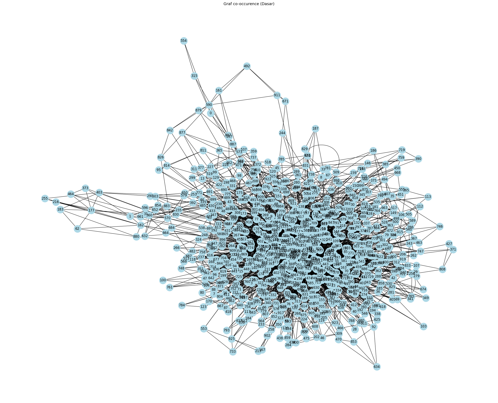

Word Graph#
pip install --upgrade pymupdf
Requirement already satisfied: pymupdf in /usr/local/lib/python3.12/dist-packages (1.26.6)
%cd /content/drive/MyDrive/PPW
[Errno 2] No such file or directory: '/content/drive/MyDrive/PPW'
/content
import pymupdf
doc = pymupdf.open("main.pdf") # open a document
out = open("output.txt", "wb") # create a text output
for page in doc: # iterate the document pages
text = page.get_text().encode("utf8") # get plain text (is in UTF-8)
out.write(text) # write text of page
out.write(bytes((12,))) # write page delimiter (form feed 0x0C)
out.close()
%%capture
!pip install nltk
import nltk
nltk.download('punkt') # hanya perlu sekali
nltk.download('punkt_tab') # opsional, untuk versi terbaru NLTK (≥3.8.2)
[nltk_data] Downloading package punkt to /root/nltk_data...
[nltk_data] Package punkt is already up-to-date!
[nltk_data] Downloading package punkt_tab to /root/nltk_data...
[nltk_data] Package punkt_tab is already up-to-date!
True
with open('output.txt', 'r', encoding='utf-8') as file:
teks = file.read()
print(teks[:200]) # tampilkan 200 karakter pertama
Pembuatan Booklet Mitigasi Bencana Gempa Bumi dan Tsunami Sebagai Media Informasi bagi Masyarakat Kota
Padang - Diana Agusti, Elva Rahmah
113
PEMBUATAN BOOKLET MITIGASI BENCANA GEMPA BUMI DAN
TSUNAMI
# Install: pip install nltk
import nltk
#text = "Ini adalah kalimat pertama. Ini kalimat kedua? Ya!"
sentences = nltk.sent_tokenize(teks)
print(sentences)
# Output: ['Ini adalah kalimat pertama.', 'Ini kalimat kedua?', 'Ya!']
['Pembuatan Booklet Mitigasi Bencana Gempa Bumi dan Tsunami Sebagai Media Informasi bagi Masyarakat Kota\nPadang - Diana Agusti, Elva Rahmah\n113\nPEMBUATAN BOOKLET MITIGASI BENCANA GEMPA BUMI DAN\nTSUNAMI SEBAGAI MEDIA INFORMASI BAGI MASYARAKAT\nKOTA PADANG\nDiana Agusti1, Elva Rahmah2\nProgram Studi Informasi Perpustakaan dan Kearsipan\nFBS Universitas Negeri Padang\nemail: dianaagusti17@gmail.com\nAbstract\nThis research was aimed to make booklet mitigation for an earthquake\nand tsunami disaster as information media of Padang Society.', 'This\npaper pupose to description creation phase booklet mitigation for an\nearthquake and tsunami disaster.', 'The research method used in this\npaper is a descriptive method.', 'Data resources was obtained from\ninterview, electronic media, and non electronic media.', 'For creating\nprocess booklet mitigation for an earthquake and tsunami disaster as\ninformation media, first step prepare tools and materials, tools and\nmaterials used in this making phase is computer or laptop connected\nto the internet network, printer and Canva software.', 'The other\nmaterials that also we need is booklet art paper.', 'Second, follow the\nsteps according to the booklet making methodology: a) Determine the\ntitle an sub title booklet; b) Format making or booklet structure,; c)\nSearching for information that need as booklet content; d) Processing\ninformation; e) Arrenge and place information according to the\nbooklet format; f) Creating booklet design and editing using Canva\napplication; g) Printing booklet.', 'Third, constraints and efforts in the\nprocess of making booklets.', 'Constraints faced are an unstable internet\nconnection that causes the editing process using the canva application\ncannot be run.', 'The effort is to find a place with a stable internet\nconnection.', 'Keywords: booklet, mitigation disaster, earthquake, tsunami\nA. Pendahuluan\nSebagian besar wilayah Indonesia rawan terhadap bencana gempa bumi.', 'Hal ini\ndikarenakan Indonesia terletak pada pertemuan tiga lempeng yaitu lempeng Indo-\nAustralia, lempeng Eurasia dan lempeng Pasifik.', 'Pergerakan antar lempeng bumi akan\nmenyebabkan terjadinya tumbukan antara satu lempeng dengan lempeng lainnya\nsehingga mengakibatkan terjadinya gempa bumi.', 'Gempa bumi bisa terjadi pada dua lokasi\nyaitu di bawah permukaan laut dan di daratan.', 'Pulau Sumatera merupakan salah satu\npulau yang dilalui oleh lempeng Indo-Australia dan Eurasia, lempeng tersebut akan\nbertumbukan pada lepas pantai barat Pulau Sumatera.', 'Itulah sebabnya mengapa di daerah\nsekitar pertemuan lempeng itu sering terjadi gempa bumi.', 'Daerah yang rawan gempa juga merupakan daerah rawan tsunami.', 'Gempa bumi\ndengan kekuatan besar yang terjadi di bawah permukaan laut dapat memicu terjadinya\n1 Mahasiswa penulis makalah Prodi Informasi Perpustakaan dan Kearsipan, wisuda September 2019.', '2 Pembimbing, Dosen FBS Universitas Negeri Padang\n\x0cJurnal Ilmu Informasi Perpustakaan dan Kearsipan\nVol.', '8, No.', '1, September 2019, Seri B\n114\ntsunami.', 'Tsunami merupakan gelombang laut raksasa atau serangkaian gelombang yang\ndapat bergerak dengan sangat cepat dalam jarak jauh menuju ke daratan.', 'Kecepatan\ngelombang tsunami bergantung pada kedalaman laut.', 'Tsunami dapat mencapai daratan\ndalam waktu beberapa menit setelah terjadinya gempa di bawah permukaan laut.', 'Hal ini\nmenjadi suatu kekhawatiran bagi masyarakat yang tinggal di daerah rawan gempa bumi.', 'Sumatera Barat merupakan salah satu wilayah rawan gempa bumi yang berada di\nPulau Sumatera.', 'Beberapa peristiwa gempa bumi dengan kekuatan cukup besar yang\nterjadi di Sumatera Barat yaitu gempa bumi pada tahun 1797 berkekuatan 8,4 Skala\nRichter terjadi di lepas pantai Padang yang mengakibatkan tsunami, gempa bumi pada 30\nSeptember 2009 berkekuatan 7,6 Skala Richter terjadi di lepas pantai Sumatera Barat, dan\ngempa bumi di Mentawai pada 25 Oktober 2010 berkekuatan 7,5 Skala Richter terjadi di\nlepas pantai Sumatera juga mengakibatkan tsunami di Mentawai (Supriyono, 2014:54-55).', 'Peristiwa gempa bumi yang masih membekas diingatan masyarakat Kota Padang\nsampai saat ini adalah gempa bumi pada 30 September 2009 yang menyebabkan\nkerusakan parah di beberapa wilayah Sumatera Barat serta menyebabkan korban\nmeninggal dunia sebanyak 6.234 orang, luka-luka 1.688 orang, hilang 1 orang, rumah\nrusak berat 135.448 unit, rumah rusak sedang 65.380 unit, dan rumah rusak ringan\n78.604 unit (Supriyono, 2014:66).', 'Kerugian dan jumlah korban yang cukup besar\ndikarenakan masih banyak masyarakat Kota Padang tidak mengetahui tindakan apa yang\nharus dilakukan sebelum terjadinya bencana, saat terjadinya bencana dan setelah\nterjadinya bencana tersebut.', 'Meski pemerintah telah menyediakan berbagai fasilitas dan\nupaya penanggulangan bencana, rasa takut dan kekhawatiran dalam diri masyarakat tentu\nmasih ada.', 'Salah satu cara untuk mengatasi rasa takut dan kekhawatiran pada masyarakat\nyaitu membekali diri dengan berbagai pengetahuan mengenai gempa bumi dan tsunami.', 'Masyarakat harus mengetahui apa itu gempa bumi dan tsunami, tindakan apa yang\ndilakukan sebelum, sesaat dan setelah terjadinya peristiwa tersebut.', 'Dengan demikian\nmasyarakat dapat mempersiapkan diri sejak dini untuk menghadapi gempa bumi dan\ntsunami yang dapat terjadi sewaktu-waktu tanpa diketahui.', 'Booklet mitigasi bencana\ngempa bumi dan tsunami merupakan salah satu media informasi bagi masyarakat Kota\nPadang dalam menambah dan meningkatkan pengetahuan masyarakat mengenai gempa\nbumi dan tsunami serta tindakan yang dilakukan sebelum, sesaat dan sesudah peristiwa\ntersebut terjadi.', 'Sehingga dapat menjadikan masyarakat Kota Padang yang siap, sigap dan\ntanggap dalam menghadapi bencana gempa bumi dan tsunami.', 'Menurut Irwansyah (2013:50) gempa bumi adalah berguncangnya bumi yang\ndisebabkan oleh tumbukan antar lempeng bumi, patahan aktif aktivitas gunung api atau\nruntuhan\nbatuan.', 'Lempeng\nsamudera\nyang\nrapat\nmassanya\nlebih\nbesar\nketika\nbertumbukkan dengan lempeng benua sehingga akan mengalami perlambatan gerak yang\nmenyebabkan penumpukkan energi di zona penunjangan.', 'Pada kondisi batas elastisitas\nlempeng terlampaui, maka terjadilah patahan batuan yang diikuti oleh lepasnya energi\nsecara tiba-tiba yang menimbulkan getaran partikel ke segala arah yang disebut gempa\nbumi.', 'Berdasarkan\nfaktor\npenyebab\nterjadinya\ngempa,\nSupriyono\n(2014:34-42)\nmenyebutkan beberapa jenis gempa bumi antara lain gempa bumi tektonik, gempa bumi\nvulkanik, gempa bumi runtuhan atau longsoran, gempa bumi tumbukan atau jatuhan, dan\ngempa bumi buatan.', 'Gempa bumi tektonik terjadi akibat pelepasan energi dari pergerakan\nlempeng-lempeng tektonik bumi yang terjadi secara tiba-tiba.', 'Gempa bumi vulkanik\nterjadi akibat aktivitas gunung berapi serta pergerakan magma di dalam perut bumi.', 'Gempa bumi runtuhan atau longsoran terjadi karena adanya runtuhan atau longsoran\ntanah atau batuan.', 'Gempa bumi tumbukan diakibatkan oleh tumbukan meteor atau\nasteroid yang jatuh ke bumi.', 'Gempa bumi buatan yang disebabkan oleh aktivitas manusia\nsendiri.', 'Pembuatan Booklet Mitigasi Bencana Gempa Bumi dan Tsunami Sebagai Media Informasi bagi Masyarakat Kota\nPadang - Diana Agusti, Elva Rahmah\n115\nTika (2012:3) mengatakan apabila terjadi gempa tanda-tanda adanya tsunami\nadalah surutnya secara tajam permukaan laut diwilayah pantai dan akan kelihatan\nterdapat ikan yang bergelimpangan pada wilayah surutnya air laut tersebut.', 'Pada saat\nyang tidak terlalu lama 10 – 15 menit, air laut yang telah surut akan kembali menghantam\npantai yang mengalami kekeringan dan kemungkinan air laut sampai kedaratan pada\nketinggian 5 – 10 meter diatas permukaan laut.', 'Terjadinya tsunami karena pada saat\ngempa terjadi rekahan kulit bumi yang berakibat air laut mengisi rekahan tersebut,\nkemudian bersamaan atau setelah terisi air laut, rekahan tadi mengalami longsoran yang\nberakibat air laut tadi meluap dan menimbulkan gelombang besar yang akan menghantam\npantai.', 'Yuldi (2008:31-33) menyatakan dampak terjadinya tsunami di atas permukaan\nbumi yaitu menyapu dan menghancurkan bangunan-bangunan, tumbuhan, binatang,\nfasilitas-fasilitas publik serta menimbulkan korban jiwa.', 'Tsunami juga menimbulkan\nkerusakan di dasar laut.', 'Pergerakan gempa dan gesekan massa air laut yang sangat besar\nmenggerus dasar laut sampai ke pantai, membunuh dan memusnahkan ekosistem di dasar\nlaut.', 'Material bangunan yang hanyut ke dasar laut juga membuat perubahan bentuk dasar\nlaut, sehingga mempengaruhi aktivitas pelayaran di sekitar bibir pantai.', 'Defenisi booklet Menurut Sari (2013:6) adalah sebuah media publikasi yang terdiri\ndari beberapa lembar dan halaman, tetapi tidak setebal buku.', 'Istilah booklet juga disebut\nsebagai perpaduan antara leaflet dan buku atau sebuah buku dengan format kecil\nlayaknya leaflet, hanya saja cara penyajian isinya jauh lebih singkat dari pada sebuah buku.', 'Satmoko (dalam Septiwiharti, 2015:30-31) menyatakan awal penulisan booklet bermula\ndari\npenentuan\ntopiknya.', 'Topiknya\ntersebut\ndiperjelas,\nsubyek\nyang\nhendak\ndikembangkan dan kepada siapa artikel tersebut ditujukan.', 'Pada bagian awal, latar\nbelakang dan informasi umum tentang topik tersebut perlu diungkapkan.', 'Struktur atau isi\ndari booklet sama seperti buku biasa, struktur booklet pada umumnya terdiri dari\npendahuluan, isi dan penutup, hanya saja cara penyajian isinya lebih singkat dari sebuah\nbuku.', 'Bentuk booklet yang praktis dan menarik akan mempermudah pengguna.', 'Selain itu,\ndiharapkan ilustrasi dalam booklet akan menambah motivasi dan minat pengguna\nmenggunakan booklet.', 'Menurut Nirmalawati (2012:62) mitigasi adalah suatu tahapan yang bertujuan\nuntuk mengurangi kemungkinan dampak negatif kejadian bencana terhadap kehidupan\natau dapat diartikan bahwa mitigasi sebagai\nmengambil tindakan-tindakan untuk\nmengurangi pengaruh-pengaruh dari suatu bahaya sebelum bahaya terjadi.', 'Sedangkan\nbencana sendiri adalah keadaan yang mengganggu kehidupan sosial ekonomi masyarakat\nyang disebabkan oleh gejala alam atau perbuatan manusia.', 'Bencana dapat terjadi melalui\nsuatu proses yang panjang atau situasi tertentu dalam waktu yang sangat cepat tanpa\nadanya tanda-tanda.', 'Supriyono (2014: 103-106) menyebutkan beberapa langkah awal\nyang dapat dilakukan dalam mitigasi bencana gempa bumi antara lain: 1) Pemetaan\nwilayah rawan gempa bumi; 2) Relokasi pemukiman penduduk; 3) Pembuatan prediksi\ngempa bumi; 4) Peraturan konstruksi tahan gempa; 5) Pembuatan jalur dan rambu\nevakuasi; 6) Penyiapan alat mitigasi; 7) Pembentukan satuan tugas; 8) Pendidikan dan\nlatihan mitigasi bencana gempa bumi.', 'Dalam Undang-Undang Nomor 14 mengenai keterbukaan informasi publik\n(2008:2) informasi adalah keterangan, pernyataan, gagasan, dan tanda-tanda yang\nmnegandung nilai, makna, pesan, baik data, faka maupun penjelasannya yang dapat dilihat,\ndidengar, dan dibaca yang disajikan dalam berbagai kemasan dan format sesuai dengan\nperkembangan teknologi informasi dan komunikasi secara elektronik ataupun non-\nelektronik.', 'Sedangkan menurut Wicaksono (2016:12) informasi adalah sesuatu yang kita\nbagi melalui beragam media komunikasi (Information is something that we share).', 'Informasi sama dengan pengetahuan yang dibagi atau telah dikomunikasikan melalui\nberbagai media (Information is where knowledge).', 'Jurnal Ilmu Informasi Perpustakaan dan Kearsipan\nVol.', '8, No.', '1, September 2019, Seri B\n116\nDengan demikian pembuatan booklet mitigasi bencana gempa bumi dan tsunami\nsebagai media informasi bagi masyarakat Kota Padang diharapkan dapat memberikan\nserta membantu masyarakat Kota Padang khususnya dalam mencari dan menambah\npengetahuan informasi mengenai mitigasi bencana gempa bumi dan tsunami, sehingga\nmasyarakat dapat meminimalisirkan rasa cemas dan khawatir yang berlebihan serta\ndapat menanamkan pendidikan dini bencana kepada anak.', 'B. Metode Penelitian\nMetode penelitian yang digunakan dalam pembuatan makalah ini adalah metode\ndeskriptif.', 'Pada makalah ini data yang diperoleh merupakan hasil dari wawancara dan\nkumpulan data-data dari berbagai sumber informasi cetak maupun non cetak.', 'Dalam\ntahapan pembuatan booklet tersebut hal yang dilakukan yaitu mempersiapkan alat dan\nbahan serta melakukan tahapan pembuatan booklet seperti: 1) Menentukan judul dan sub\njudul booklet; 2) Membuat format atau struktur booklet; 3) Mencari serta mengumpulkan\ninformasi yang dibutuhkan sebagai isi booklet; 4) Pengolahan informasi; 5)\nMenyusun\ninformasi sesuai dengan format booklet; 6) Melakukan editing; dan 7) Mencetak booklet.', 'C.\nPembahasan\nPada pembuatan booklet terdapat berbagai hal yang harus diperhatikan sehingga\ndapat mewujudkan bentuk booklet yang baik serta dapat mencapai tujuan dari pembuatan\nbooklet tersebut.', 'Hal yang harus diperhatikan dalam pembuatan booklet yaitu judul dan\nsubjudul, struktur dan fromat yang konkret, metode penulisan, serta penggunaan sampul.', 'Dalam\ntahapan\npembuatan\nbooklet\ntersebut\nhal\nyang\ndilakukan\nyaitu\nmempersiapkan alat dan bahan serta melakukan tahapan pembuatan booklet seperti: 1)\nmenentukan judul dan subjudul booklet; 2) membuat format atau struktur booklet; 3)\nmencari serta mengumpulkan informasi yang dibutuhkan sebagai isi booklet; 4)\npengolahan informasi; 5) menyusun informasi sesuai dengan format booklet; 6)\nmelakukan editing; dan 7) mencetak booklet.', '1.', 'Alat dan Bahan yang Digunakan Dalam Pembuatan Booklet\nAlat dan bahan yang digunakan dalam pembuatan booklet ini yaitu komputer atau\nlaptop yang terhubung dengan jaringan internet, printer, serta software Canva.', 'Selain itu\nbahan yang dibutuhkan berupa kertas khusus booklet art paper.', 'Beberapa alat dan bahan\nyang penulis gunakan sebagai berikut.', 'a.\nKomputer atau Laptop\nKomputer atau laptop dalam berbagai jenis dan tipe dapat\ndigunakan dalam\npembuatan booklet ini, hanya saja perangkat yang digunakan harus terhubung dengan\njaringan internet.', 'Hal ini dikarenakan applikasi atau software yang digunakan bersifat\nonline.', 'b.', 'Software atau Aplikasi canva\nMerupakan salah satu aplikasi yang dapat digunakan dalam mendesain berbagai\nbentuk media cetak.', 'Aplikasi ini menyediakan banyak desain dan aksesoris yang dapat\ndigunakan untuk membuat atau mendesain berbagai media cetak.', 'Penggunaan aplikasi ini\ncukup mudah dimengerti dan menyediakan berbagai jenis desain yang menarik.', 'Aplikasi\ncanva dapat ditemukan melalui browser internet dangan memasukan kata kunci canva\npada search engine.', 'Pembuatan Booklet Mitigasi Bencana Gempa Bumi dan Tsunami Sebagai Media Informasi bagi Masyarakat Kota\nPadang - Diana Agusti, Elva Rahmah\n117\nGambar 1.', 'Aplikasi Canva pada Browser Internet\nGambar di atas merupakan tampilan pada browser ketika memasukan kata kunci\ncanva pada search engine.', 'Setelah itu klik link canva yang muncul pada baris pertama\nyang muncul setelah melakukan pencarian.', 'Gambar 2.', 'Tampilan untuk Pembuatan Akun Canva\nGambar 2 merupakan tampilan untuk pembuatan akun canva, sebelum aplikasi\ncanva dapat digunakan, pengguna diharuskan untuk membuat akun terlebih dulu.', 'Pendaftaran akun dapat melalui facebook, akun google dan e-mail.', 'Setelah melakukan\npendaftaran atau pembuatan akun maka aplikasi canva dapat digunakan.', 'c.\nPrinter\nAlat yang digunakan untuk pembuatan booklet selanjutnya yaitu printer, printer\nyang digunakan untuk mencetak booklet tersebut dapat berbagai jenis dan tipe, hanya saja\nsewaktu melakukan pencetakan booklet, pastikan pengaturan printer sesuai dengan\nukuran kertas, tinta, dan posisi susunan halaman booklet yang akan dicetak.', 'd.\nArt Paper Kertas Khusus Booklet\nBahan yang digunakan untuk membuat booklet yaitu art paper yang merupakan\nkertas khusus untuk booklet, art paper yang digunakan berukuran A5 dengan gramasi\nkertas 150 gr.', '2.', 'Langkah-langkah Pembuatan Booklet\nBerdasarkan metodologi pembuatan booklet yang telah dijelaskan, adapun\nlangkah-langkah pembuatan booklet mitigasi bencana gempa bumi dan tsunami sebagai\nberikut:\n\x0cJurnal Ilmu Informasi Perpustakaan dan Kearsipan\nVol.', '8, No.', '1, September 2019, Seri B\n118\na.\nMenentukan Judul dan Sub Judul Booklet\nTahap awal dalam sebelum pembuatan booklet adalah menentukan judul dan sub\njudul yang akan digunakan sebagai perwakilan sekaligus gambaran awal dari booklet\ntersebut.', 'Judul pada booklet ini yaitu “Padang Siap, Sigap dan Tanggap Menghadapi\nBencana Gempa Bumi dan Tsunami”.', 'Judul tersebut disesuaikan dengan pembahasan yang\nakan dipaparkan pada pembahasan atau isi booklet.', 'Selain itu booklet ini ditujukan khusus\nuntuk masyarakat Kota Padang.', 'Sub judul pada booklet ini yaitu “Booklet Mitigasi\nBencana” hal ini dikarenakan booklet tersebut memaparkan informasi mengenai mitigasi\nbencana baik sebelum, sesaat dan sesudah terjadinya bencana gempa bumi dan tsunami.', 'Dengan adanya judul dan sub judul, maka pengguna atau masyarakat dapat mengetahui\ntujuan serta bentuk dari booklet tersebut.', 'b.\nMembuat Format atau Struktur Booklet\nBooklet merupakan media cetak berupa buku kecil yang jumlah halamanya sedikit.', 'Bentuk format atau struktur pada booklet hampir mirip dengan format pembuatan buku\npada umumnya, hanya saja pada booklet tidak terlalu mengikat dan dapat disesuaikan\ndengan bentuk booklet yang akan dibuat.', 'Adapun struktur pada booklet mitigasi bencana\nini yaitu cover, pendahuluan, pembahasan pertama mengenai gempa bumi, pembahasn\nkedua mengengai tsunami, pembahasan ketiga mengenai peta evakuasi, pembahasan\nkeempat mengenai tas siaga bencana dan pembahasan kelima mengenai nomor-nomor\npenting.', 'Pada pembahasan pertama menjelaskan apa itu gempa bumi, jenis gempa bumi,\ndan upaya yang dilakukan prabencana, saat bencana, dan pasca bencana gempa bumi.', 'Pada pembahasan kedua menjelaskan apa itu tsunami, tanda-tanda terjadinya tsunami,\ndan upaya yang dilakukan prabencana, saat bencana, dan pasca bencana tsunami.', 'Pada\npembahasan ketiga berisikan peta jalur evakuasi serta daerah yang aman dari tsunami,\nselain itu pada pembahasan ketiga ini juga terdapat daftar shelter atau bangunan yang\nbisa dijadikan tempat evakuasi sementara ketika terjadi bencana tsunami.', 'Pada\npembahasan keempat berisikan infromasi mengenai tas siaga bencana darurat yang harus\ndisiapkan sebelum terjadinya bencana.', 'Pada pembahasan kelima yaitu berisikan informasi\nmengenai nomor telepon badan atau lembaga, dan rumah sakit baik milik pemerintah\nmaupun swasta yang dapat digunakan dalam keadaan darurat.', 'c.\nMencari Serta Mengumpulkan Informasi yang Dibutuhkan Sebagai Isi Booklet\nPembahasan pada booklet mitigasi bencana merupakan kumpulan informasi yang\nberasal dari berbagai sumber.', 'Penulis mengumpulkan informasi-informasi mengenai\nmitigai bencana, gempa bumi, dan tsunami dari berbagai sumber berupa buku, jurnal,\nserta data dari Badan Penanggulangan Bencana Daerah (BPBD) Kota Padang dan hasil\nwawancara dengan Suryaningsih, SE, M.Si selaku PH.', 'Kasi Kesiapsiagaan Bidang\nPencegahan dan Kesiapsiagaan, Bapak Nasrul Sugana selaku Kepala Bidang Kedaruratan\ndan Logistik, serta Bapak Ir.', 'Syaiful Bahri selaku Kepala Bidang Rehabilitasi dan\nRekonstruksi BPBD Kota Padang.', 'Adapun informasi dan data yang diperoleh yaitu\nmengenai defenisi gempa bumi dan tsunami, jenis gempa bumi, tanda-tanda terjadinya\ntsunami, bentuk upaya yang dilakukan prabencana, saat bencana, pasca bencana gempa\nbumi dan tsunami.', 'd.\nPengolahan Informasi\nSetelah mendapatkan berbagai informasi dan data, tahap selanjutnya penulis\nmelakukan pengolahan atau penyaringan informasi yang telah dikumpulkan.', 'Data dan\ninformasi dari berbagai sumber tersebut kemudian penulis susun dan rangkai menjadi\nsebuah point untuk pembahasan pada booklet.', 'Pembuatan Booklet Mitigasi Bencana Gempa Bumi dan Tsunami Sebagai Media Informasi bagi Masyarakat Kota\nPadang - Diana Agusti, Elva Rahmah\n119\ne.\nMenyusun Informasi Sesuai Format Booklet\nData dan informasi yang telah diolah, kemudian penulis susun dan sesuaikan\ndengan bentuk format halaman dan pembahasan booklet, dimana informasi dan data\npembahasan pertama mengenai gempa bumi, pembahasan kedua mengenai tsunami,\npembahasan ketiga mengenai peta evakuasi, pembahasan keempat mengenai tas siaga\nbencana dan pembahasan kelima mengenai nomor-nomor penting.', 'f.\nMelakukan Editing\nTahap selanjutnya setelah mendapatkan berbagai informasi dan data yaitu\nmembuat desain booklet dan editing.', 'Tahap pembuatn desain dan editing penulis\nmenggunakan software atau aplikasi canva.', 'Seperti yang telah dijelaskan sebelumnya\npada alat dan bahan apa itu aplikasi canva, cara menemukan aplikasi canva dan mendaftar\natau pembuatan akun canva, selanjutnya pada tahap ini yaitu melakukan editing\nmenggunakan aplikasi canva.', 'Gambar 3.', 'Tampilan Awal Canva\nPada gambar di atas merupakan tampilan awal pada aplikasi canva, dalam\nmenggunakan canva ada beberapa atribut yang diharus diperhatikaan.', 'Pada gambar di\natas ditunjukan oleh panah yang memiliki nomor.', '1) Templates, berisikan desain-desain\nlatar yang unik dan berbagai model yang dapat digunakan; 2) Photos, berisikan foto-foto\natau gambar yang telah disediakan aplikasi canva yang dapat digunakan atau ditambahkan\ndalam pembuatan desain; 3) Elements, berisikan berbagai macam bentuk icon, line, shape,\nillustration; 4) Text, berisikan berbagai macam jenis dan tipe tulisan yang dapat digunakan\nuntuk memperindah tulisan; 5) Background, berisikan berbagai bentuk latar belakang\nkertas, atau dasar halaman sebelum ditambahkan berbagai komponen lainnya; 6) Uploads,\ndigunakan untuk menambahkan foto dari laptop ke dalam aplikasi canva; 7) Tools warna\ndigunakan untuk mengataur atau mengganti warna-warna komponen yang terdapst\ndalam desain.', '8) Halaman kerja, seperti kanvas atau kertas yang akan menampilkan\nbentuk desain yang kita buat.', '9) Tools untuk menambahkan halam kerja baru.', '1\n2\n3\n4\n5\n6\n7\n8\n9\n\x0cJurnal Ilmu Informasi Perpustakaan dan Kearsipan\nVol.', '8, No.', '1, September 2019, Seri B\n120\nGambar 4.', 'Tampilan Canva Saat Menambahkan Tamplates\nPada gambar 4 merupakan tampilan canva saat menambahkan tamplates, tahap\nawal dalam melakukan editing yaitu membuat dasar kertas dengan menambahkan\ntemplates sesuai dengan desain yang diinginkan.', 'Untuk melihat berbagai model templates\nyang tersedia, klik tools templates yang ditunjukan oleh panah nomor 1 maka akan muncul\nberbagai model dan bentuk templates yang disediakan oleh aplikasi canva.', 'Untuk\nmemudahkan mencari templates yang sesuai, ketikan keyword pada kolom pencarian yang\nditunjukan oleh panah nomor 2, maka berbagai templates sesuai dengan keyword akan\nditampilkan.', 'Selanjutnya untuk mengatur warna, dan posisi templates dapat diubah pada\nkolom yang ditunjukkan oleh nomor 3.', 'Pada booklet mitigasi bencana ini mengambil tema\nkota dengan perpaduan warna biru dan oren.', 'Gambar 5.', 'Tampilan Canva Saat Menambahkan Elements\nGambar 5 merupakan tampilan canva saat menambahkan elements.', 'Tools elements\ndigunakan untuk menambahkan line atau shape pada desain untuk memilih dan mencari\nelements yang sesuai, menentukan warna dan posisi elements dapat diatur sama seperti\nmenambahkan\ntemplates\nsebelumnya.', 'Pada\nbooklet\nmitigasi\nini\nelements\nyang\nditambahkan berupa lingkaran dan garis kotak dengan warna yang disesuaikan dengan\ntema.', 'Selain itu pada elements juga dapat menambahkan berbagai gambar ilustrasi yang\ndiinginkan.', '2\n3\n1\n\x0cPembuatan Booklet Mitigasi Bencana Gempa Bumi dan Tsunami Sebagai Media Informasi bagi Masyarakat Kota\nPadang - Diana Agusti, Elva Rahmah\n121\nGambar 6.', 'Tampilan Canva Saat Menambahkan Text\nGambar di atas merupakan tampilan canva saat menambahkan text atau tulisan.', 'Berbagai jenis dan bentuk text dapat digunakan, pada booklet mitigasi bencana ini penulis\nmenggunakan kombinasi jenis, bentuk ukuran dan warna text sesuai dengan tema, judul\ndan sub judul pada booklet ini.', 'Untuk memilih dan mengatur ukuran, jenis, serta warna\ntulisan dapat diatur pada kolom yang terdapat di atas halaman kerja.', 'Setelah membuat desain, menambahkan berbagai atribut, menyesuaikan warna\ndan ukuran serta, menyusun pembahasan sesuai dengan format yang telah dirancang\nsebelumnya maka, langkah selanjutnya yaitu memastikan atau melihat kembali hasil\ndesain\nyang\ntelah\ndibuat\nsebelum\ndownload.', 'Apabila\nterdapat\nkesalahan\natau\nketidaksesuaian pada atribut dengan desain booklet, maka sebelum desain tersebut di\ndownload masih dapat diperbaiki dan disesuaikan dengan apa yang diharapkan.', 'Gambar 7.', 'Tampilan Seluruh Desain Booklet pada Canva\nPada gambar 7 merupakan tampilan seluruh desain booklet yang telah dibuat pada\naplikasi canva, sebelum download booklet tersebut pastikan seluruh komponen dan\natribut tidak terdapat kesalahan, apabila masih terdapat kesalahan dapat diperbaiki.', 'Jurnal Ilmu Informasi Perpustakaan dan Kearsipan\nVol.', '8, No.', '1, September 2019, Seri B\n122\nGambar 8.', 'Tampilan Canva pada Saat Download\nPada gambar di atas merupakan tampilan pada canva saat melakukan download,\nsetelah memastikan desain booklet tidak terdapat bagian yang salah, hal selanjutnya yang\ndilakukan yaitu download desain booklet yang telah dibuat sebelumnya.', 'Untuk download\nklik pada kolom download yang terdapat di bagian atas sebelah kanan tampilan canva.', 'Setelah desain booklet tersebut di download maka desain tersebut akan tersimpan pada\nperangkat komputer atau laptop dengan format png.', 'g.\nMencetak Booklet\nTahap selanjutnya merupakan tahap akhir dalam pembuatan booklet yaitu proses\npencetakan atau printout.', 'Pencetakan booklet menggunakan kertas art paper khusus\nuntuk booklet.', 'Booklet di cetak timbal balik seperti buku pada umumnya hanya saja pada\nbooklet ukurannya lebih kecil dari pada buku lainnya.', 'Pada booklet mitigasi bencana ini\npencetakannya menggunakan kertas art paper dengan ukuran A5 dan gramasi kertas 150\ngr.', 'Setelah proses pencetakan selesai, booklet mitigasi bencana gempa bumi dan tsunami\ntersebut dapat digunakan dan di publikasikan kepada masyarakat sebagai penyebarluasan\ninformasi mengenai gempa bumi dan tsunami, dengan tujuan akhir dapat menambah\nwawasan dan pengetahuan mengenai berbagai hal tentang bencana gempa bumi dan\ntsunami.', '3.', 'Kendala dan Upaya dalam Proses Pembuatan Booklet\nPada proses pembuatan booklet terdapat kendala saat melakukan editing hal ini\ndikarenakan jaringan atau koneksi internet yang tidak stabil sehingga menyulitkan dalam\nmelakukan pengeditan booklet dengan menggunakan aplikasi canva dimana aplikasi\ntersebut harus terhubung dengan internet.', 'Sehingga apabila jaringan internet terganggu\nmaka aplikasi canva yang juga tidak dapat digunakan untuk melakukan proses editing.', 'Adapun upaya untuk mengatasi hal tersebut yaitu, memastikan jaringan atau\nkoneksi internet terhubung dengan baik saat melakukan editing menggunakan aplikasi\ncanva.', 'Apabila jaringan atau koneksi internet tidak memungkinkan untuk menjalankan\naplikasi canva tersebut, maka sebaiknya carilah tempat yang menyediakan koneksi\ninternet yang baik.', 'D. Simpulan dan Saran\n1.', 'Simpulan\nBerdasarkan pembahasan pada bab sebelumnya dapat disimpulkan bahwa proses\npembuatan booklet mitigasi bencana gempa bumi dan tsunami sebagai media informasi\nbagi masyarakat Kota Padang adalah sebagai berikut.', '1) Alat dan bahan yang digunakan\ndalam pembuatan booklet ini yaitu komputer atau laptop yang terhubung dengan jaringan\ninternet, printer, software canva dan kertas khusus booklet art paper.', '2) Langkah-langkah\n\x0cPembuatan Booklet Mitigasi Bencana Gempa Bumi dan Tsunami Sebagai Media Informasi bagi Masyarakat Kota\nPadang - Diana Agusti, Elva Rahmah\n123\nyang dilakukan dalam pembuatan booklet yaitu pemilihan dan penggunaan judul, pada\nbooklet ini judul yang digunakan mengenai “Padang Siap, Sigap, Tanggap Menghadapi\nBencana Gempa Bumi dan Tsunami”.', 'Selanjutnya format yang digunakan pada booklet\nberupa cover, pendahuluan dan pembahasan.', 'Untuk informasi pada isi booklet diperoleh\ndari media cetak maupun non cetak.', 'Setelah memperoleh berbagai informasi yang\ndibutuhkan, kemudian informasi tersebut diolah sehingga menjadi point-point penting.', 'Apabila informasi telah diolah kemudian disusun dan diletakkan sesuai dengan format\nbooklet.', 'Selanjutnya membuat desain tampilan booklet dan editing menggunakan aplikasi\ncanva.', 'Booklet yang telah selesai didesain kemudian dicetak mengunakan kertas art\npapper dengan ukuran kertas A5.', '3) Kendala dalam proses pembuatan booklet mitigasi\nbencana yaitu jaringan atau koneksi internet yang tidak stabil mengakibatkan aplikasi\nediting canva tidak bisa dijalankan, upayanya yaitu mencari tempat yang menyediakan\njaringan atau koneksi internet yang stabil.', '2.', 'Saran\nBerdasarkan pembahasan dan kesimpulan sebelumnya maka penulis memberikan\nsaran kepada: 1) masyarakat sebaiknya dapat memanfaatkan booklet mitigasi bencana\ngempa bumi dan tsunami dalam menambah pengetahuan dan wawasan mengenai\nbencana gempa bumi dan tsunami, serta menjadikannya sebagai pendidikan dini bencana\ngempa bumi dan tsunami yang dapat ditanamkan pada diri sendiri, anak dan keluarga.', '2)\nBadan Penanggulangan Bencana Daerah Kota Padang, sebaiknya lebih meningkatkan\nkegiatan sosialisasi dengan masyarakat mengenai bencana gempa bumi dan tsunami,\nmemberikan informasi-informasi penting yang berkaitan dengan gempa bumi dan\ntsunami serta dapat menambah penggunaan berbagai media publikasi dalam melancarkan\nkegiatan tersebut.', 'Catatan: artikel ini disusun berdasarkan malakah tugas akhir penulis dengan pembimbing\nElva Rahmah, S.Sos., M.I.Kom\nDaftar Rujukan\nIrwansyah, E., Saputra, T. B., Piu, L., & Wirangga, K. (2013, Maret 03).', 'Pengembangan\nAplikasi Sistem Informasi Geografis Untuk Monitoring Gempa Bumi.', 'Dipetik April 17,\n2019, dari http://garuda.ristekdikti.go.id/journal/article/3576\nNazir, M. (2011).', 'Metode Penelitian.', 'Bogor: Ghalia Indonesia.', 'Nirmalawati.', '(2012, April 30).', 'Pembentukan Konsep Diri Pada Siswa Pendidikan Dasar\nDalam\nMemahami\nMitigasi\nBencana.', 'Dipetik\nApril\n17,\n2019,\ndari\nhttp://garuda.ristekdikti.go.id/journal/article/10749\nSupriyono, P. (2014).', 'Bencana Gempa Bumi.', 'Yogyakarta: Andi.', 'Sari, E. T., Ariusmedi, & Zubaidah.', '(2013, November 28).', 'Perancangan Booklet Bangunan\nBersejarah\nDi\nKota\nPadang.', 'Dipetik\nApril\n17,\n2019,\ndari\nhttp://garuda.ristekdikti.go.id/journal/article/129199\nSeptiwiharti, L. (2015).', 'Pengembangan Bahan Ajar Berbentuk Booklet Sejarah Indonesia\nPada Materi Pertempuran Lima Hari Di Semarang Terhadap Minat Belajar Siswa\nKelas Xi Ips Sma Negeri 1 Semarang Tahun Ajaran 2014/2015.', 'Dipetik April 17,\n2019, dari https://lib.unnes.ac.id/20773/\nTika, P. (2012, Juni 06).', 'Pendidikan Tsunami Di Wilayah Gempa Dan Bendungan Di\nIndonesia.', 'Dipetik\nApril\n17,\n2019,\ndari\nhttp://garuda.ristekdikti.go.id/journal/article/19350\nUndang-undang No.14 (2008).', 'Pusat Informasi.', 'Jakarta.', 'Wicaksono, H. (2016, Februari 2).', 'Kompetensi Perpustakaan dan Pustakawan Dalam\nImplementasi Teknologi Informasi di Perpustakaan.', 'Dipetik April 16, 2019, dari\n\x0cJurnal Ilmu Informasi Perpustakaan dan Kearsipan\nVol.', '8, No.', '1, September 2019, Seri B\n124\nhttp://dev.perpusnas.go.id/assets/uploads/2016/02/2_artikel_hendrowicaksono.', 'pdf\nYuldi.', '(2008).', 'Mengenal Tsunami.', 'Jakarta Timur: CV.', 'Risky Aditya.']
import pandas as pd
df = pd.DataFrame(sentences, columns=['kalimat'])
print(df)
kalimat
0 Pembuatan Booklet Mitigasi Bencana Gempa Bumi ...
1 This\npaper pupose to description creation pha...
2 The research method used in this\npaper is a d...
3 Data resources was obtained from\ninterview, e...
4 For creating\nprocess booklet mitigation for a...
.. ...
206 pdf\nYuldi.
207 (2008).
208 Mengenal Tsunami.
209 Jakarta Timur: CV.
210 Risky Aditya.
[211 rows x 1 columns]
df.to_csv('kalimat.csv', index=False, encoding='utf-8')
Untuk membuat word graph
Lanjutkan dengan menggunakan https://www.geeksforgeeks.org/nlp/co-occurence-matrix-in-nlp/
import nltk
from nltk.corpus import stopwords
from nltk.tokenize import word_tokenize
from collections import defaultdict, Counter
import numpy as np
import pandas as pd
# Download NLTK resources
nltk.download('punkt')
nltk.download('stopwords')
# ==== BACA FILE CSV ====
df = pd.read_csv("kalimat.csv")
# Ambil semua teks dalam satu string
text = " ".join(df.iloc[:,0].astype(str))
# Preprocess the text
stop_words = set(stopwords.words('english'))
words = word_tokenize(text.lower())
words = [word for word in words if word.isalnum() and word not in stop_words]
# Define the window size for co-occurrence
window_size = 2
# Create a list of co-occurring word pairs
co_occurrences = defaultdict(Counter)
for i, word in enumerate(words):
for j in range(max(0, i - window_size), min(len(words), i + window_size + 1)):
if i != j:
co_occurrences[word][words[j]] += 1
# Create a list of unique words
unique_words = list(set(words))
# Initialize the co-occurrence matrix
co_matrix = np.zeros((len(unique_words), len(unique_words)), dtype=int)
# Populate the matrix
word_index = {word: idx for idx, word in enumerate(unique_words)}
for word, neighbors in co_occurrences.items():
for neighbor, count in neighbors.items():
co_matrix[word_index[word]][word_index[neighbor]] = count
# DataFrame output
co_matrix_df = pd.DataFrame(co_matrix, index=unique_words, columns=unique_words)
co_matrix_df
[nltk_data] Downloading package punkt to /root/nltk_data...
[nltk_data] Package punkt is already up-to-date!
[nltk_data] Downloading package stopwords to /root/nltk_data...
[nltk_data] Package stopwords is already up-to-date!
| cv | kesiapsiagaan | pernyataan | waktu | pertemuan | dipetik | penting | mengapa | title | lembaga | ... | mahasiswa | diikuti | adapun | sebagian | electronic | meteor | meminimalisirkan | 10 | tinta | melalui | |
|---|---|---|---|---|---|---|---|---|---|---|---|---|---|---|---|---|---|---|---|---|---|
| cv | 0 | 0 | 0 | 0 | 0 | 0 | 0 | 0 | 0 | 0 | ... | 0 | 0 | 0 | 0 | 0 | 0 | 0 | 0 | 0 | 0 |
| kesiapsiagaan | 0 | 0 | 0 | 0 | 0 | 0 | 0 | 0 | 0 | 0 | ... | 0 | 0 | 0 | 0 | 0 | 0 | 0 | 0 | 0 | 0 |
| pernyataan | 0 | 0 | 0 | 0 | 0 | 0 | 0 | 0 | 0 | 0 | ... | 0 | 0 | 0 | 0 | 0 | 0 | 0 | 0 | 0 | 0 |
| waktu | 0 | 0 | 0 | 0 | 0 | 0 | 0 | 0 | 0 | 0 | ... | 0 | 0 | 0 | 0 | 0 | 0 | 0 | 0 | 0 | 0 |
| pertemuan | 0 | 0 | 0 | 0 | 0 | 0 | 0 | 0 | 0 | 0 | ... | 0 | 0 | 0 | 0 | 0 | 0 | 0 | 0 | 0 | 0 |
| ... | ... | ... | ... | ... | ... | ... | ... | ... | ... | ... | ... | ... | ... | ... | ... | ... | ... | ... | ... | ... | ... |
| meteor | 0 | 0 | 0 | 0 | 0 | 0 | 0 | 0 | 0 | 0 | ... | 0 | 0 | 0 | 0 | 0 | 0 | 0 | 0 | 0 | 0 |
| meminimalisirkan | 0 | 0 | 0 | 0 | 0 | 0 | 0 | 0 | 0 | 0 | ... | 0 | 0 | 0 | 0 | 0 | 0 | 0 | 0 | 0 | 0 |
| 10 | 0 | 0 | 0 | 0 | 0 | 0 | 0 | 0 | 0 | 0 | ... | 0 | 0 | 0 | 0 | 0 | 0 | 0 | 0 | 0 | 0 |
| tinta | 0 | 0 | 0 | 0 | 0 | 0 | 0 | 0 | 0 | 0 | ... | 0 | 0 | 0 | 0 | 0 | 0 | 0 | 0 | 0 | 0 |
| melalui | 0 | 0 | 0 | 0 | 0 | 0 | 0 | 0 | 0 | 0 | ... | 0 | 0 | 0 | 0 | 0 | 0 | 0 | 0 | 0 | 0 |
928 rows × 928 columns
%%capture
pip install networkx
import networkx as nx
arr = co_matrix_df.to_numpy()
G=nx.from_numpy_array(arr)
import matplotlib.pyplot as plt
plt.figure(figsize=(25, 20))
nx.draw(G, with_labels=True, node_color='lightblue', node_size=700, font_size=12)
plt.title("Graf co-occurence (Dasar)", fontsize=14)
plt.show()
